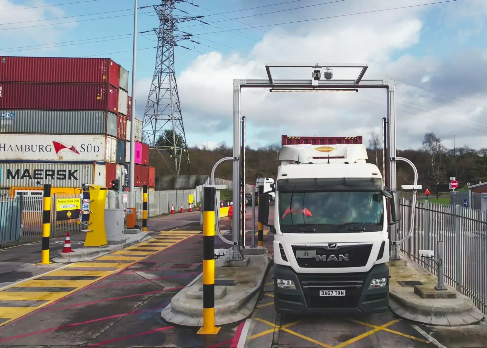

AI, Machine & Deep Learning, GRC, Web & App Development Company!
An AI-base solution to capture Container and Vehicle
information with laser fast speed and
with
astounding
accuracy and easily integrates with Terminal
Operating System (TOS) applications.
Deployed at In and Out Gates, at Weighbridges and at
Quay Cranes increases. Cloud-Based
Solution is easy
to
deploy and to manage. On-Premise options are also
available.
Increases Terminal Productivities and Efficiencies
manifold and Saves millions of dollars
for the
business.
Highly Scalable. Designed for 247 Operating under
toughest conditions.
This AI-powered solution offers significant
advantages, transforming terminal operations.
One of the major
advanatages, it captures container and vehicle
information with lightning-fast speed and
remarkable
accuracy, ensuring seamless data processing with
minimal human intervention. The system
easily integrates
with Terminal Operating Systems (TOS), facilitating
smooth operational flow across
platforms. Its
cloud-based nature offers ease of deployment,
management, and remote access, while
on-premise options
cater to specific security or infrastructure needs.
The solution's scalability accommodates
growing
terminal demands, increasing productivity and
efficiency. Ultimately, it helps businesses
save millions by
streamlining processes, reducing costs, and
enhancing overall performance, operating round
the clock under
even the toughest conditions.
It is highly scalable and adaptable to growing
demands, with both cloud and on-premise
deployment options
available. Designed for 24/7 reliability, it
operates continuously under the toughest
conditions, ensuring
uninterrupted performance
Our approach to planning and strategy for terminal
automation centers on helping you implement a
clear, actionable roadmap for success with AI-based
solutions. We begin by assessing your
terminal operations, identifying key areas for
improvement in container and vehicle tracking,
and pinpointing opportunities for greater
efficiency. Together, we define your long-term
vision
for automation and break it down into achievable
milestones, ensuring every step aligns with
your operational goals.
Through tailored coaching, we guide you in deploying
AI-powered solutions that optimize
leadership, operational efficiency, market
positioning, and financial growth. Whether it's
implementing scalable solutions for container
tracking at In and Out Gates, Weighbridges, or
Quay Cranes, or integrating seamlessly with Terminal
Operating Systems (TOS), we provide the
insights and tools needed to enhance productivity.
Our strategy sessions focus on setting realistic
targets, navigating industry challenges, and
optimizing terminal resources. With a cloud-based
solution that's easy to deploy and manage
(with on-premise options available), we empower your
terminal to operate 24/7 under the toughest
conditions. This innovative approach increases
productivity and efficiency, saving millions
while helping your business thrive in today's
competitive logistics landscape.
If you need any helps, please feel free to contact us.
+923218287590 info@Perceptron Gloabals.com